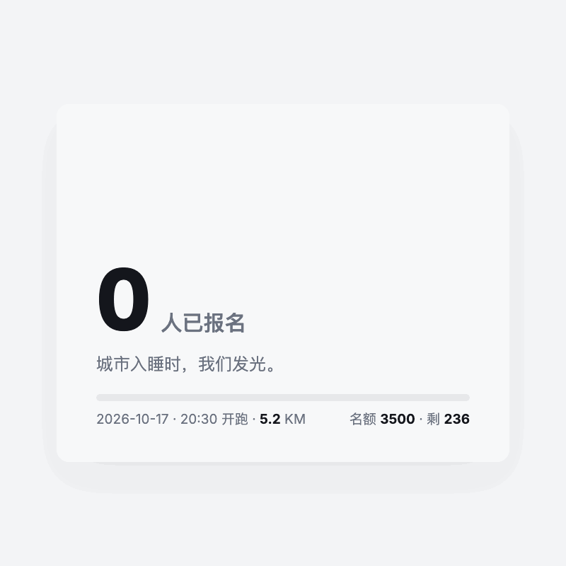
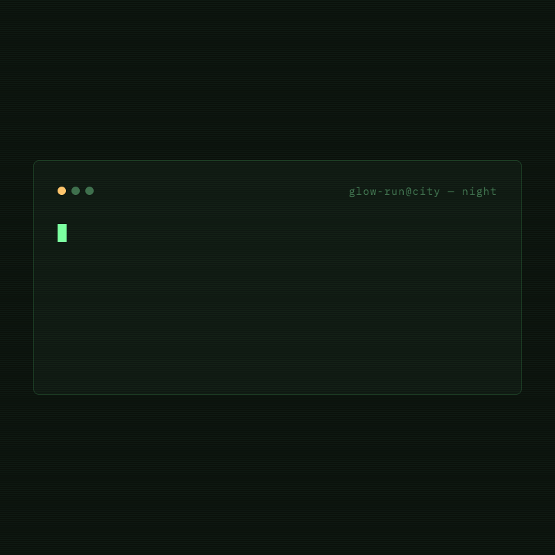
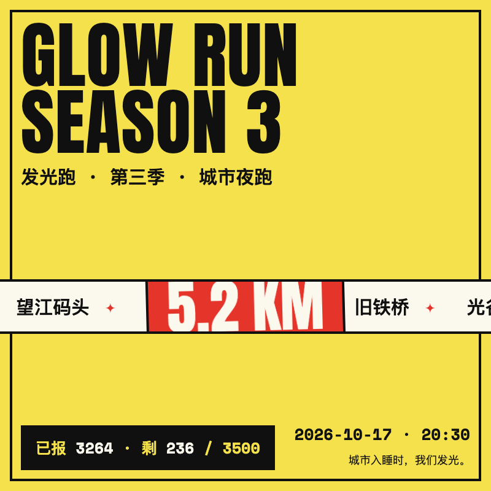

浅色专业调：Inter 800 大数字用 @property --num 整数插值计数，签名构件=4px 强调色横杠（标题杠与进度条同源）。
832,397 B · 36 帧 · 末帧 --num=3264 / meter scaleX=0.9326

深色磷绿：41 字符命令行以 steps(41,end) 逐字打出（等宽字体下 1ch=1 字符宽），签名构件=闪烁块光标，扫描线 overlay 按技能规则 opacity .03。
461,291 B · 36 帧 · 末帧宽度 590.4px = 41ch × 14.4px

高饱和撞色海报：5 个打卡点芯片恰好复制一份成 10 枚，translateX(0→-50%) 无缝滚动； unforgettable detail=城市在 5.2KM 印章背后流过。
1,242,577 B · 36 帧 · 周期 3s=GIF 时长 → 环缝与帧步长一致
| 活动 | 发光跑 GLOW RUN · 第三季 · 城市夜跑 |
|---|---|
| 日期 / 开跑 | 2026-10-17 · 20:30 |
| 路线 | 5.2 KM · 望江码头 → 鼓楼口 → 灯巷 → 旧铁桥 → 光谷终点 |
| 报名 | 已报 3264 / 名额 3500 · 剩 236（3264/3500=0.9326 即进度条 scaleX） |
| 口号 | 城市入睡时，我们发光。 |